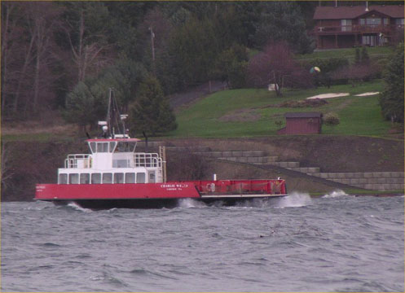
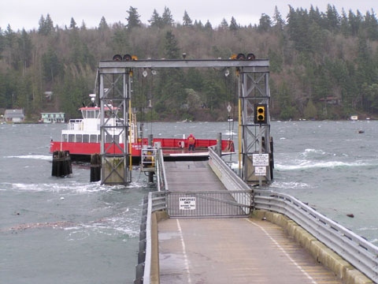

Doug Kammerer took these pictures of the ferry during the wind storm of December 27, 2002.
|  | John and Donnie had to untie the ferry and take it out in the passage. Because of the rough water and abnormally high tides, the twisting motion could have caused severe damage to the ramp. |
| John had to stand off the dock until the tide lowered and wind subsided. The noon ferry departed 45 minutes late. |  |